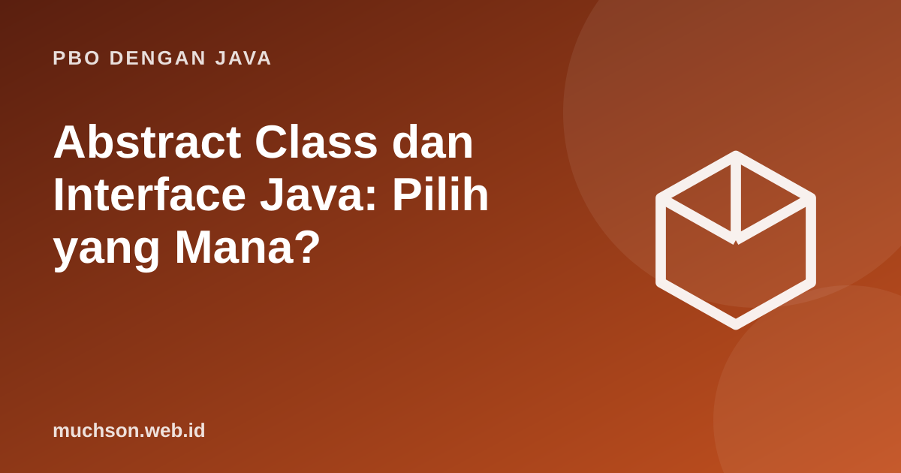

Beranda › Artikel › PBO dengan Java
PBO dengan JavaAbstract Class dan Interface Java: Pilih yang Mana?
Abstract class dan interface sama-sama mendefinisikan kontrak yang harus dipenuhi class lain, tetapi dipakai untuk tujuan berbeda. Memahami perbedaannya adalah salah satu pertanyaan wawancara PBO yang paling sering muncul.
Sebaiknya sudah paham: inheritance, polimorfisme

Tujuan belajar
Setelah membaca dan mencoba materi ini, Anda mampu:
- mendefinisikan dan memakai abstract class dengan method abstrak
- mendefinisikan dan mengimplementasikan interface
- menjelaskan default method, static method, dan multiple interface
- memilih antara abstract class dan interface berdasarkan kebutuhan
- membaca diagram kelas UML sederhana
Abstract class: kerangka dengan bagian yang wajib diisi
abstract class Pembayaran {
protected final double jumlah;
Pembayaran(double jumlah) { this.jumlah = jumlah; }
abstract double biayaAdmin(); // wajib diimplementasikan subclass
final double total() { // algoritma tetap (template), memakai bagian abstrak
return jumlah + biayaAdmin();
}
}
class KartuKredit extends Pembayaran {
KartuKredit(double j) { super(j); }
double biayaAdmin() { return jumlah * 0.02; }
}
class TransferBank extends Pembayaran {
TransferBank(double j) { super(j); }
double biayaAdmin() { return 2_500; }
}
public class Main {
public static void main(String[] args) {
// new Pembayaran(1000); // error: class abstrak tidak bisa diinstansiasi
Pembayaran[] p = { new KartuKredit(100_000), new TransferBank(100_000) };
for (Pembayaran x : p) System.out.println(x.getClass().getSimpleName() + ": " + x.total());
}
}KartuKredit: 102000.0
TransferBank: 102500.0
Interface: kontrak murni tentang kemampuan
interface DapatDicetak {
void cetak(); // otomatis public abstract
}
interface DapatDisimpan {
void simpan(String lokasi);
default void simpanCadangan() { // default method: implementasi bawaan
simpan("cadangan/");
}
static String format() { return "txt"; } // static method pada interface
}
class Laporan implements DapatDicetak, DapatDisimpan { // boleh banyak interface
public void cetak() { System.out.println("mencetak laporan"); }
public void simpan(String lokasi) { System.out.println("menyimpan ke " + lokasi); }
}
public class Main {
public static void main(String[] args) {
Laporan l = new Laporan();
l.cetak();
l.simpan("dokumen/");
l.simpanCadangan();
DapatDicetak c = l; // variabel bertipe interface
c.cetak();
System.out.println(DapatDisimpan.format());
}
}mencetak laporan
menyimpan ke dokumen/
menyimpan ke cadangan/
mencetak laporan
txt
Hubungan dalam diagram UML
Membandingkan keduanya
| Aspek | Abstract class | Interface |
|---|---|---|
| Hubungan | Pewarisan satu induk (extends) | Implementasi banyak (implements) |
| Atribut | Boleh atribut instance dengan keadaan | Hanya konstanta (public static final) |
| Konstruktor | Ada | Tidak ada |
| Method | Abstrak dan konkret | Abstrak, default, static, private |
| Cocok untuk | Keluarga class sejenis yang berbagi kode dan keadaan | Kemampuan atau peran yang dapat dimiliki class tak berkaitan |
Prinsip desain
Aturan praktis: program ke interface, bukan ke implementasi. Deklarasikan variabel sebagai List atau DapatDicetak, dan pilih class konkretnya hanya saat membuat objek.
Latihan mandiriCoba kerjakan dulu sebelum membuka jawaban.
1. Ubah nama DapatDicetak menjadi Cetakan? Mengapa penamaan interface sebagai sifat (kata sifat) umum?
Interface biasanya menyatakan kemampuan: Comparable, Runnable, Serializable.
2. Sebutkan interface standar yang sering dipakai.
Comparable, Comparator, Runnable, Iterable, List, Map, AutoCloseable.
3. Mengapa abstract class dapat punya konstruktor?
Untuk menginisialisasi atribut bersama yang dipanggil oleh konstruktor subclass lewat super(...).
4. Dua interface punya default method bernama sama; class mengimplementasikan keduanya. Apa yang terjadi?
Error kompilasi kecuali class menimpa method itu (dan dapat memanggil salah satunya lewat NamaInterface.super.method()).
Ringkasan
- Abstract class: kerangka dengan keadaan dan kode bersama, sebagian method wajib diisi subclass.
- Interface: kontrak kemampuan; satu class dapat mengimplementasikan banyak.
- Pilih abstract class untuk keluarga sejenis, interface untuk peran lintas hierarki.
- Program ke interface, bukan ke implementasi.
Tanya jawab
Apakah interface bisa mewarisi interface lain?
Ya, dengan extends, termasuk dari beberapa interface sekaligus.
Apa itu functional interface?
Interface dengan tepat satu method abstrak (misalnya Runnable, Comparator); dapat dipakai dengan lambda.
Kapan abstract class tidak diperlukan lagi?
Bila tidak ada keadaan bersama, interface dengan default method sering cukup.
Referensi
- Oracle: Interfaces (Java Tutorials)
- Oracle: Abstract Methods and Classes
- Joshua Bloch, Effective Java (edisi ke-3, Addison-Wesley, 2018)
- The Java Language Specification